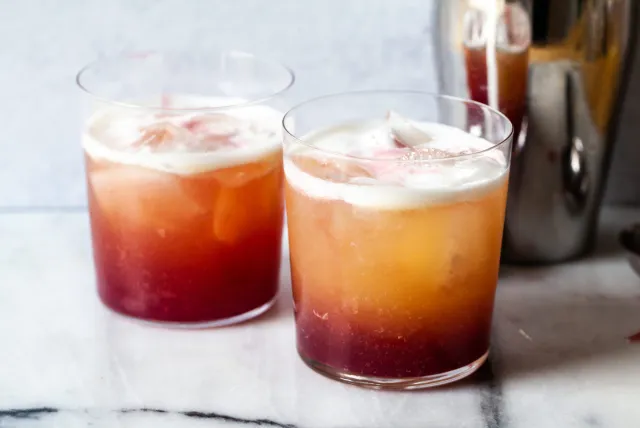

New York Sour

New York Sour - a classic
From Deb @ Smitten Kitchen: If you created
a mood board that accumulated all of my cocktail interests — whiskey, lemon juice,
succinctness, and some kind of niche New York spin — you might also wonder why it’s
taken 15 years for us to talk about the wonder that is the New York Sour. Let’s waste
no more time without it. The New York Sour is, in fact, a classic whiskey sour — whiskey,
lemon juice, simple syrup, and an egg white, if you wish, for a more dramatic texture —
with dash of red wine that, ideally, should float atop creating distinct layers that
integrate as you sip. I had thought that rye is more common than bourbon, because rye
can come from New York, but have yet to find that corroborated. Regardless, you can use
what you have, as I did.
Ingredients
- Ice
- 1/2 cup rye whiskey or bourbon
- 1/4 cup freshly squeezed lemon juice
- 2 Tablespoons simple syrup
- 1 large egg white
- 2 to 3 Tablespoons red wine
Steps
- Place a handful of ice, the whiskey, lemon juice, simple syrup, and egg white
(if you’re using it) in a cocktail shaker or a jar with a lid. Shake vigorously
until the outside of the shaker or glass is frosty and very chilled. Strain over
more ice into two glasses.
- Gently place a thin spoon upside-down at the surface of the drink and slowly,
in the barest trickle, pour 1 to 1 1/2 tablespoons red wine over the back of it,
moving it across the drink’s surface as you pour. If all goes well, the wine will
stay at the surface of the drink. If it sinks, well, it’s still going to be pretty
and delicious. Repeat with the second drink.